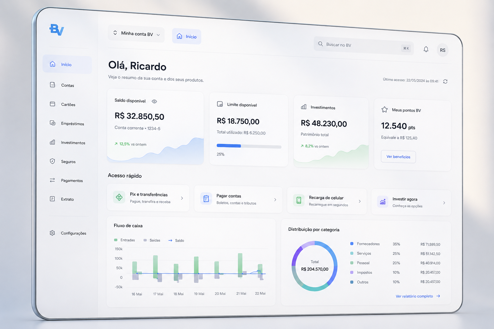
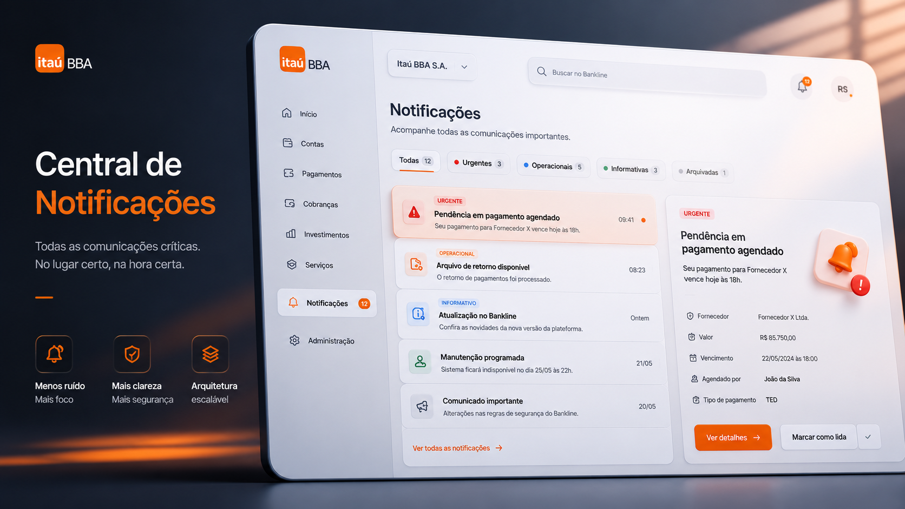
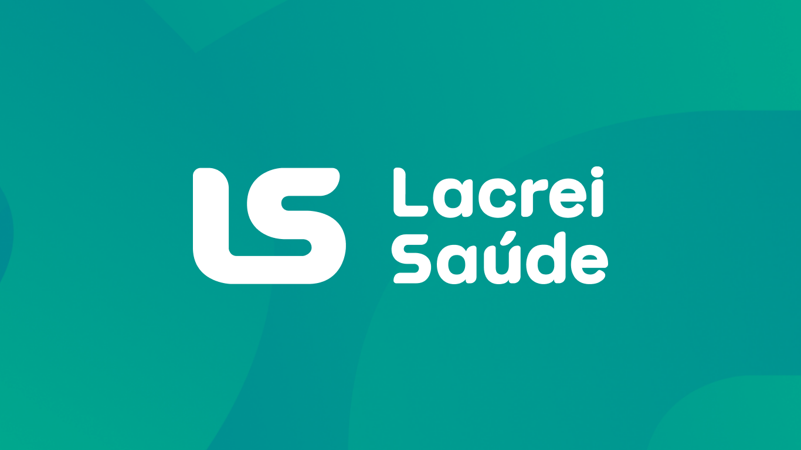
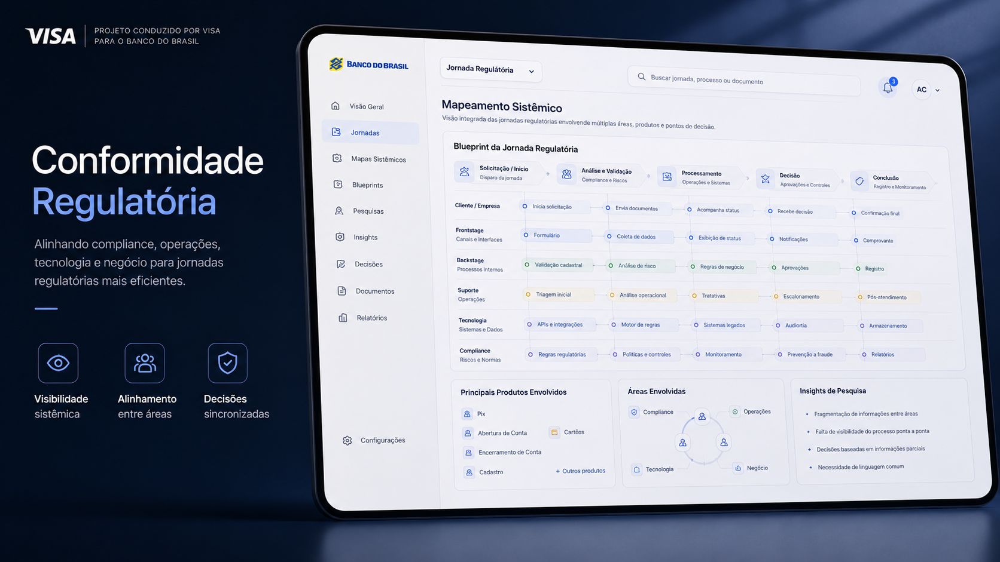

Projetos selecionados
Cases
Discovery end-to-end, pesquisa estruturada e decisões orientadas a valor.
Modernização do Dashboard de Operações Financeiras
Reestruturação do dashboard estratégico da plataforma de Antecipações de Recebíveis, usada por 6 áreas do banco e mais de 10 times internos de produto. Menos carga cognitiva, decisões mais rápidas e operações sem fricção.

Central de Notificações — Bankline
O Itaú BBA é o maior e mais rentável banco de investimento da América Latina. Projetei a Central de Notificações do Bankline — unificando comunicações críticas dispersas em múltiplos canais numa única experiência que elimina falhas com impacto financeiro direto nos maiores grupos empresariais do Brasil.

Design System — Lacrei Saúde
Primeiro Design System de uma plataforma de saúde inclusiva para a comunidade LGBTQIA+. Pesquisa com usuários, acessibilidade WCAG e impacto social como parte central do processo.

Conformidade Regulatória — Visa
Discovery end-to-end em jornadas críticas de conformidade regulatória. Service Blueprints para tornar visível a complexidade sistêmica e alinhar compliance, ops, tech e negócio.

Jornada de Precatórios — PJUS × BRQ
Pesquisa qualitativa e quantitativa com clientes da maior empresa de antecipação de precatórios do Brasil. 50% de abandono pós-proposta transformado em jornada orientada por confiança, previsibilidade e dados.